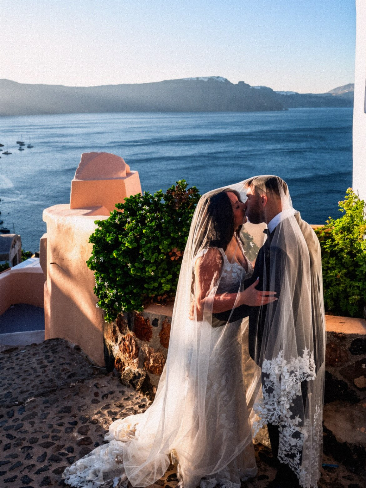
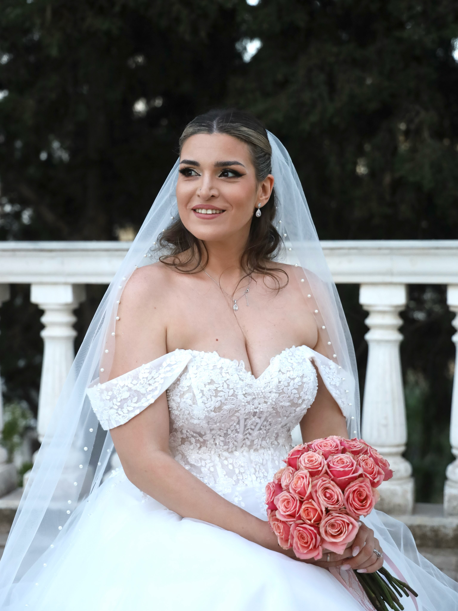

SANTORINI / ATHENS
The way
it felt.
Wedding photography & films.
A FEW THINGS TO REMEMBER
The day.
The people.
The feeling.

Hold the button, or hold Space or Enter, to focus the photograph. Release to return to the dream. Assistive technology can activate the button to toggle focus.
